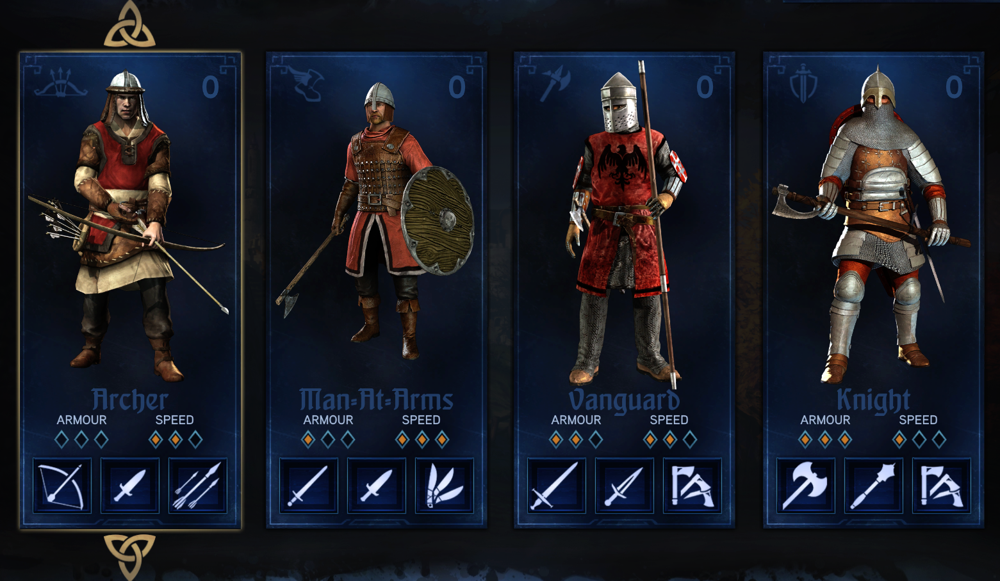
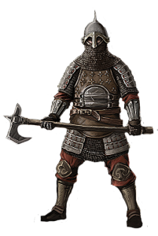
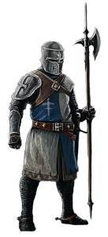
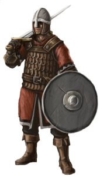
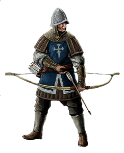

Klassen und Waffen
Ritter
 Der Ritter ist die am häufigsten gespielte Klasse. Er zieht seinen Vorteil aus seiner Stärke und seiner Rüstung. Meist ist er mit zweihändigen Waffen ausgerüstet, um möglichst viel Schaden auszuteilen.
Der Nachteil des Ritters ist allerdings seine Geschwindigkeit. Wenn er mit einem Schlag sein Ziel verfehlt, braucht er lange um sich davon zu erholen und ist darum in dieser Zeitperiode verwundbar. Dies kann einen Waffenknecht zu einer wahrlichen Gefahr für den Ritter machen, da dieser auf Geschwindigkeit setzt. Allerdings braucht er dort meist nur einen Treffer zu landen.
Der Ritter kann auch mit einem Schild gespielt werden. Dies ermöglicht es ihm sich gegen Bogenschützen zu schützen, denn Aufgrund seiner geringen Geschwindigkeit ist er ein gutes Ziel für die Fernkämpfer.
Ausgerüstet kann man den Ritter mit Äxten, Schwertern, Hämmern und Morgensternen. Des weiteren kann er mit den verschiedensten Schilden oder mit Wurfäxten ausgestattet werden.
Pikenier
 Der Pikenier ist eine gute Klasse für Beginner. Er hat weniger Rüstung als der Ritter aber mehr als der Waffenknecht. Der Pikenier ist langsamer als der Waffenknecht, aber schneller als der Ritter. Er ist also durschnittlich.
Der Nachteil des Pikeniers ist der Mangel an Verteidigung. Dies macht ihn zu einem beliebten Ziel für Fernkämpfer, denn er kann sich nur mit Rauchbomben gegen die Fernkämpfer wehren.
Der Pikenier kann nur mit zweihändigen Waffen ausgerüstet werden. Diese sind Hellebarden, Schwerter, Speere und Hämmer. Als spezielle Waffen kann er mit Rauchbomben, Wurfmessern oder Wurfäxten bewaffnet werden.
Die zweihändigen Schwerter des Pikeniers erlauben es ihm durch ihre Länge mit mehreren Gegnern auf einmal fertig zu werden. Die anderen Waffen haben einen erhöhten Schaden beim Zustoßen mit der Waffe.
Das Spezielle am Pikenier ist sein Angriff aus dem Sprint. Wenn der Pikenier rennt, kann er einen starken Angriff ausführen. Ob diese Fähigkeit aufgeladen ist, sieht man daran, dass der Pikenier die Waffe in einer anderen Position hält. Dies passiert nach ungefähr drei Sekunden des Rennens. Bei diesem Angriff macht er einen gewaltigen Sprung nach Vorne und schlägt heftig mit der Waffe auf den Gegner ein. Dies kann auch mit der zweiten Waffe und sogar mit den Fäusten ausgeübt werden.
Waffenknecht
 Der Waffenknecht ist die leichteste Nahkampfklasse. Seine Spielweise basiert sehr auf seiner Geschwindigkeit und seiner Ausweichfähigkeit. Der Waffenknecht hat nämlich wenig Rüstung, ist aber dafür die schnellste Einheit im Spiel.
Seine Waffen sind auf Geschwindigkeit ausgelegt, machen aber wenig Schaden. Der Waffenknecht kann mit Schwertern, Morgensternen, Äxten und Stäben bewaffnet werden. Alle dieser Waffen ,außer dem Stab, sind einhändig und können dadurch problemlos mit einem Schild kombiniert werden. Dies macht ihn zu einer großen Gefahr für Bogenschützen. Man kann aber auch auf das Schild verzichten. Dann hat man die Wahl zwischen Wurfmessern und einer Brandbombe.
Noch erwähnenswert ist, dass fast alle Waffen des Waffenknechts Zweitwaffen des Pikeniers und des Ritters sind. Die Zweitwaffen des Waffenknecht sind zudem auch die Zweitwaffen des Bogenschützen.
Wie schon oben angemerkt, setzt der Waffenknecht auf das Ausweichen. Dies ist eine spezielle Fähigkeit, die nur der Waffenknecht beherrscht. Einfach gesagt springt der Waffenknecht einfach schnell in die gewählte Richtung um Angriffen aus dem Weg zu gehen.
Bogenschütze
 Der Bogenschütze ist eine gute Unterstützungseinheit. Er ist darauf basiert seinen Gegnern über große Distanzen zu schaden. Er hat gar keine Rüstung, was ihn gegen Angriffe sehr verwundbar macht. Der Bogenschütze ist gleich schnell wie der Pikenier.
Der Bogenschütze kann mit Bögen, Armbrüsten, Wurfspeeren und Schleudern ausgerüstet werden. Für diese kann er oftmals auch noch die Munition ändern. Viel schwache Munition oder wenig starke Munition. Im Nahkampf kann er sich mit seiner Zweitwaffe oder mit den Wurfspeeren verteidigen. Wenn man sich für die Wurfspeere entscheidet, kann man dazu auch noch ein Schild nehmen.
Das spezielle am Bogenschütze ist, dass er eine transportierende Deckung mit sich tragen kann, wenn er sich für die Armbrust entscheidet.